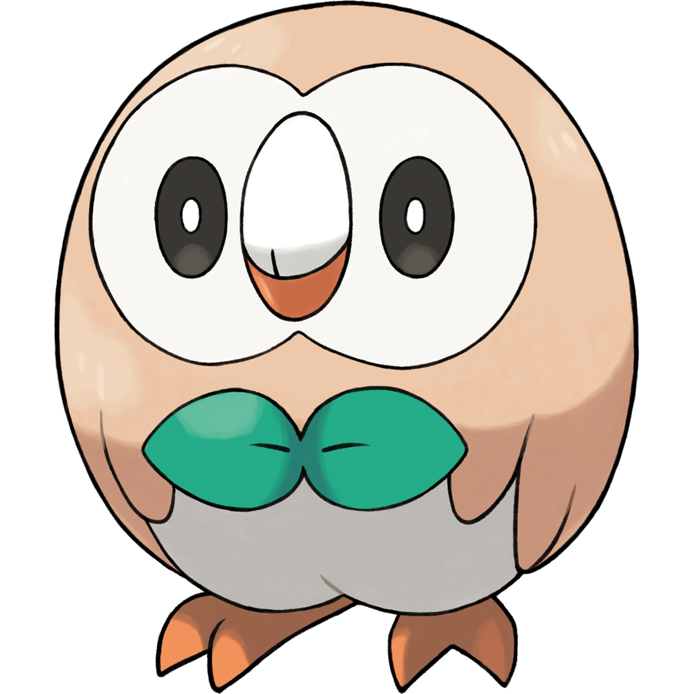

Trailer
Rezumat
Ce începe ca o vacanță de vară petrecută în regiunea tropicală Alola, se transformă de fapt în următorul capitol din viața lui Ash Ketchum, ce are dorința de a deveni un maestru Pokemon. Pentru Ash și Pikachu, urmează multe descoperiri în această insulă însorită, precum pokemoni noi și oameni de la care vor învăța multe, precum profesorul Kukui sau iubitorul de distracție Samson Oak. Multe alte fețe noi vor ajuta în aventura lui Ash în Alola, antrenori puternici – Kiawe, Lana, Mallow și Sophocles – și un misterios cercetător pe nume Lillie. Antagoniștii seriei Pokemon, Team Rocket, au făcut și ei o călătorie până în Alola, urmărind să captureze pokemoni puternici. Dar au competiție puternică, la fel de malefică: adepții Team Skull, ce găsesc plăcere în a distruge și au intenții mult mai sinistre.
Părere personală
Mi-am dorit să vizionez acest serial de când am văzut într-un magazin cărți de joc Pokemon. Acel moment a trezit un sentiment de nostalgie adâncă, amintindu-mi de momentele din copilărie în care abia așteptam ora de difuzare a acestui desen.
De curiozitate, am căutat pe Netflix “Pokemon” și am fost surprins să văd că această serie, numită Sun & Moon, este în continuă desfășurare. Nu am ezitat prea mult timp până să încep acest anime. M-am atașat de personaje foarte repede, mai ales de Kiawe, ce apare încă din primul episod.
Fiind iubitor de Pokemon, această serie mi se pare pur și simplu “cool”: pokemoni cool, caractere cool, până și antagoniști cool.
Am reușit să mă atașez și de un anume pokemon ce apare destul de repede în echipa lui Ash, și anume Rowlet. Este amuzant și pur. Adorabil prin orice face. Este imposibil să nu-l iubești.
Nota personală oferită pentru această serie este 9/10. Deși povestea și caracterele sunt deosebite, au fost momente în care episoadele păreau a fi de umplutură. Episoade în care nu se întâmplă nimic interesant și nu afli nimic nou. Din fericire, rata ar fi cam de un episod de acest fel la alte 20, și până la urmă, tot divertisment este.
Deși puteți găsi această serie pe Netflix, nu este completă. În schimb, puteți viziona episoadele chiar pe site-ul oferit de cei de la The Pokemon Company.